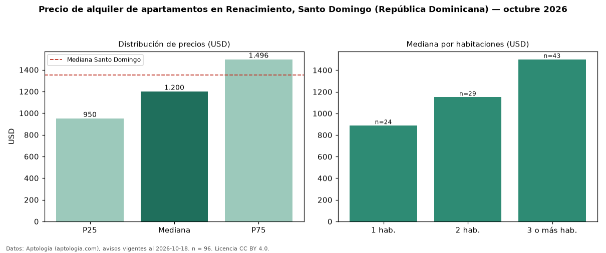

Precio de alquiler de apartamentos en Renacimiento, Santo Domingo (República Dominicana) — octubre 2026
En Renacimiento, Santo Domingo (República Dominicana), la mediana de canon mensual de apartamentos es USD 1.200, según 96 avisos vigentes. Eso es 11 % por debajo de la mediana de Santo Domingo para apartamentos (USD 1.350). Por metro cuadrado, la mediana es USD 8,95/m² al mes (n = 88 avisos con área), 28 % por debajo de Santo Domingo (USD 12,50/m²). Con el precio por m² de venta del mismo segmento (USD 1.886/m²), la rentabilidad bruta implícita es 5,7 % anual (aproximación con medianas de ofertas distintas). El área mediana anunciada es 140 m². El segmento con más oferta es el de 3 o más habitaciones (43 avisos, mediana USD 1.500); pasar de 1 habitación a 3 o más habitaciones cambia la mediana +69 %. Por precio mediano es el puesto 14 de 20 sectores de Santo Domingo con al menos 30 avisos de apartamentos en alquiler (USD): en la franja media. La mitad central de los avisos va de USD 950 a USD 1.496 (razón 1,6), una dispersión moderada. Datos: Aptología (aptologia.com), CC BY 4.0 — https://www.aptologia.com/do/alquiler/santo-domingo/renacimiento. Archivos: PDF, CSV con las cifras y gráfica PNG.

| Avisos únicos | 96 |
|---|---|
| Percentil 25 | COP 950 |
| Mediana | COP 1.200 |
| Percentil 75 | COP 1.496 |
| Mediana por m² | COP 8 |
Fuente: avisos vigentes de portales inmobiliarios recopilados por Aptología, deduplicados (mínimo 30 avisos únicos por celda). Precios pedidos, no cerrados. Fecha: 2026-10-18.